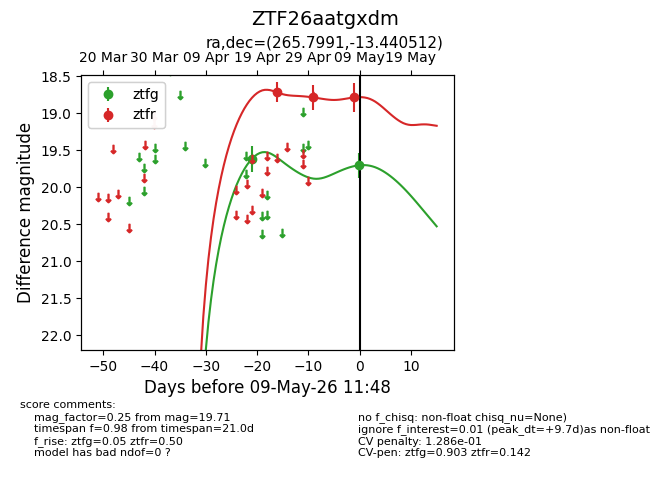
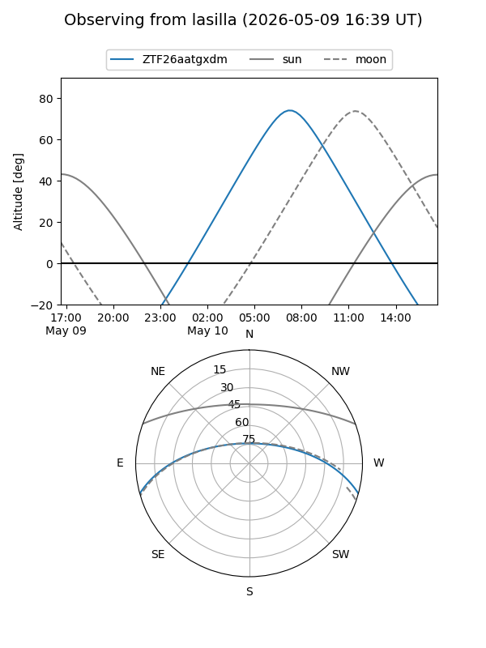
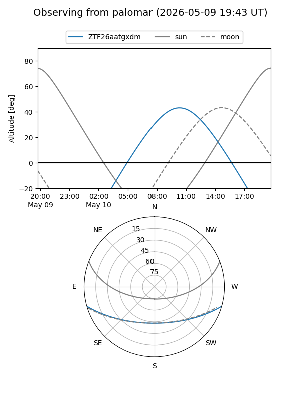
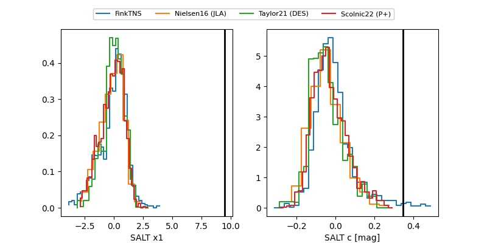

ZTF26aatgxdm
Target ZTF26aatgxdm at 2026-05-09 11:49
Aliases and brokers:
FINK: link
Lasair: link
ALeRCE: link
alt names
ZTF26aatgxdm (ztf,fink_ztf)
Coordinates:
equatorial (ra, dec) = 265.7991,-13.44051
equatorial (HMS+DMS) = 17:43:11.77,-13:26:25.84
galactic (l, b) = (13.0107,+8.50911)
Flags:
likely cv
Photometry:
last ztfg=19.71, ztfr=18.79
2 ztfg, 3 ztfr detections
Lightcurve

Visibility


Additional plots
